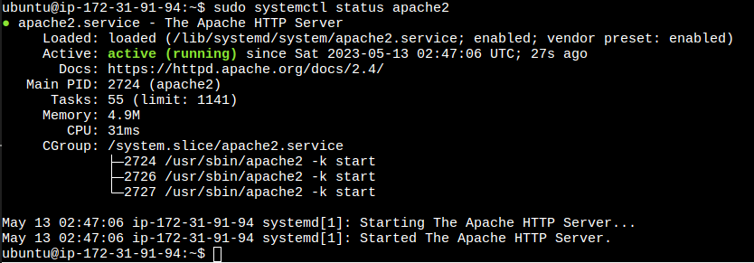
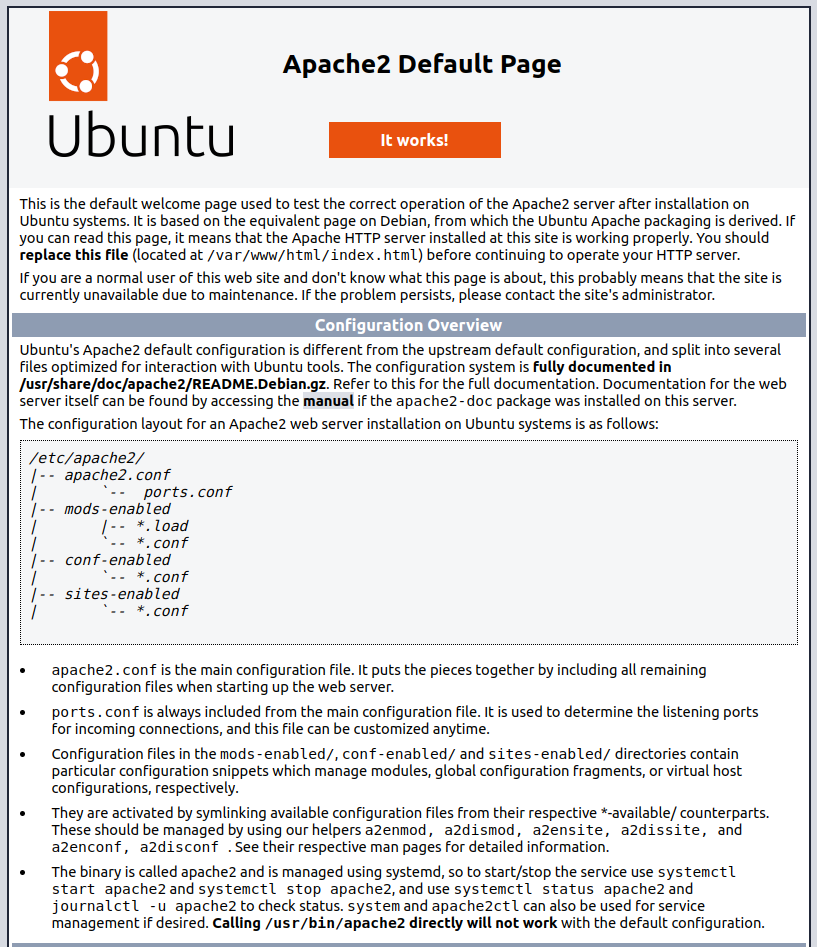

Lab 3 - Configuring an Apache Server in the Cloud
Overview
This week's lab will cover the following:
- Implementing an elastic IP in AWS.
- Accessing elevated privileges in Linux.
- Managing Linux packages and updating the system.
- Managing Linux services.
- Modifying VPC Security Groups.
- Accessing your Web Server using a browser.
Creating a new instance in AWS
Create a new instance in AWS (like you did in Lab 1), with the following configuration:
- Name: www
- OS: Ubuntu
- Amazon Machine Image (AMI): Make sure Ubuntu Sever 22.04 is selected
- Add it to your existing security group.
- Use your existing key pair (from Lab 1). If you lost your key, then generate a new one. Don't lose this one.
Connect to your server using SSH and your key pair. You will be performing the remainder of this lab on your new instance. By the end of this lab you will have configured an Apache web server. You will be using this web server to deploy your website to for the rest of the labs, as well as assignment 1.
Accessing elevated privileges in Linux
Your regular user in Linux can create files and directories, as well as remove them; but only in your home directory. To do anything that changes the configuration of the system you need root access. You can accomplish this in two ways:
- Switch to the root user
- Use sudo
Switching to root to install software, updates and configure the system is not a good practice. Sudo can be configured to allow multiple users administrative access without giving anyone else the root password. Additionally you can configure sudo to only allow users to execute specific commands with elevated (root) privileges. Sudo works much the same as Run As Administrator in Windows. To use sudo, all you need to do is add sudo in front of any command you wish to execute with elevated (root) privileges. Lets see this in action. In your www instance, issue the command:
whoami
Now issue:
sudo whoami
Note the different output.
Managing Linux packages and updating the system
Installing software in Linux requires both an active Internet connection and knowledge of which package management tool to use for your distribution (or distro). Linux software and updates come from special sources hosted on other servers, known as repositories (or repos). All the major Linux distros host their own repos, though anyone can host a repository for a distribution - and many organizations do. Due to the Open Source nature of Linux, certain repos may contain specialized software that is not available in the main repository (such as EPEL - Extra Packages for Enterprise Linux); or they may contain a mirror of the main repo.
Accessing these and installing software requires using your Linux distro's command line package management tool. The major ones you will encounter when you use Linux are:
- DNF (Dandified Yum)
- Which is an update of YUM (Yellowdog Updater, Modified). Both of these operate as a front end for RPM (Red Hat Package Manager). These are used in Red Hat based Linux distros.
- APT (Aptitude Package Manager)
- This is used in Debian based Linux distributions such as Ubuntu, Linux Mint, and Kali Linux.
- Pacman (Pacman Package Manager)
- This is used in Arch Linux, as well as a few others.
- Zypper Package Manager
- This is used in OpenSUSE, which is popular for use on servers in Europe.
Since you are using Ubuntu, you will be using APT to install software and update the system. To install updates, issue the following command:
sudo apt update
Now that your system is up to date it's time to install Apache, which is the software that will be powering your web server. In Ubuntu, the Apache package is called apache2. Also, you can use apt with the -y option to auto assume yes. This can save a little time when you know you want to install the software or updates.
sudo apt -y install apache2
Managing Linux services
Normally the next thing you would want to do is start the service using the systemctl command, then confirm it is running. However, when you installed Apache2 this was automatically done. It's still a good idea to confirm the service is running. The systemctl command always requires elevated privileges, and follows the same format:
sudo systemctl action serviceThe action can be any of the following:
- start
- Starts the service.
- stop
- Stops the service.
- restart
- Restarts the service.
- status
- Displays information about the current status of the service, such as whether is running or not.
- enable
- Configures the service to start automatically on boot.
- disable
- Prevents the service from starting automatically on boot.
This isn't a complete list, but it covers all of the things you will require for most system administration tasks. Using what you have just learned, check to see if the apache2 service is running.
sudo systemctl status apache2
You should see the following output:
Accessing your Apache server through a browser
In EC2, Navigate to Instances and click on the Instance ID for your www instance. In the right side, under Public IPv4 DNS click on the open address link. This will send an HTTP request to your Apache server. This will fail, because we haven't allowed inbound HTTP (port 80) traffic in the Security Group settings.
Modifying VPC Security Groups
Browse to Security Groups (in EC2 under Network & Security), and click on the Security Group ID for the default security group. Under InBound rules, click on Edit inbound rules, and select HTTP from the drop down with a source of 0.0.0.0/0, and click Save rules. Your screen should look like the following:
Accessing your Apache server from a web browser
It's time to test to see if everything's working properly. Browse to your instance details in EC2 by clicking on Instances, then the Instance ID next to your www instance (screenshot below).
Click open address beside your Public IPv4 address. You should see the default Apache test page (screenshot below). If you do not, edit your url and change https:// to http://.
Implementing an elastic IP in AWS
When you are configuring network resources you want them to have a static IP, which doesn't change. Currently our AWS instance pulls a new IP from Amazon's DHCP server every time it boots up. Fortunately, you can configure a static IP through what AWS calls an Elastic IP. These cost money when they're not in use, and will be the biggest expense item from our free $100 credits this semester (since your instance will be offline unless you are working on things for this course). To obtain an Elastic IP in EC2k, click on Elastic IPs under Network & Security:
Then click Allocate Elastic IP address in the top right corner. On the bottom of the new screen, leave the rest of the defaults and click Allocate (screenshot below).
Now you've reserved your Elastic IP. It is yours for as long as you want (which will be the entire semester). However, you need to associate it with the instance you want to access it through (in this case, www). To do that check the box beside your Elastic IP, then click the Actions drop down and click Associate Elastic IP address.
Next, click on the Instance box and select the instance with (www) in the name (screenshot below), and click Associate in the bottom right corner.
Now you can access your www instance from anywhere by using the same IP address. You should write this IP down somewhere for future use.
Accessing your Apache server from a web browser
Open a web browser and either copy/paste, or type out your elastic IP in the address bar (make sure the url is being requested using http and not https to confirm you can still access your Apache test page. In next week's lab you will configure your development environment and create your first web page using HTML.
Completing the lab
Take screenshots of your elastic IP (in EC2) and accessing your Apache2 Ubuntu Default Page through a web browser using http. Submit them to the dropbox on eCentennial for proof of completion. The following Exploration Questions are for furthering your knowledge only, and may appear on quizzes or tests at any time later in this course.
Exploration Questions
- What is sudo? How do you use it?
- What package manager does Ubuntu use?
- What command do you use to install software?
- What command do you use to update your system?
- How do you find the current status of the apache2 service?
- What is an Elastic IP?